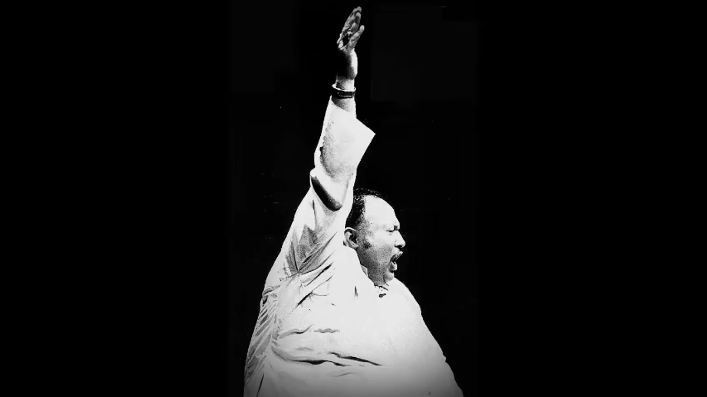

Nusrat Fateh Ali Khan
1948-1997
"A man learns all his life and dies the day he thinks that he has learnt everything."
"To be a qawwal is more than being a performer, more than being an artist,One must be willing to release one's mind and soul from one's body to achieve ecstasy through music. Qawwali is enlightenment itself."
"Yes, I tried to change the classical style in a way that people who don't understand it can enjoy."

-
1948 - born into a Punjabi Muslim family in Faisalabad, Punjab, Pakistan
-
1964 - His father died when Nusrat was 16 years old. Ten days after his death, Nusrat had a dream in which his father appeared and instructed him to sing. The boy gave his first public performance at his father's funeral ceremony 40 days later.
-
1971 - His uncle Mubarak Ali Khan died, and Nusrat Khan became the official leader of the family Qawwali party which now became known as “Nusrat Fateh Ali Khan, Mujahid Mubarak Ali Khan & Party”.
-
1985~1988 - Khan performed at the World of Music, Arts and Dance (WOMAD) festival in London and performed in Paris
-
1987 - He performed at the 5th Asian Traditional Performing Art Festival in Japan
-
1988 - Khan teamed up with Peter Gabriel on the soundtrack to The Last Temptation of Christ, which led to Khan being signed to Gabriel's Real World label.
-
1989 - Commissioned by Oriental Star Agencies Ltd in Birmingham UK, Khan collaborated at Zella Recording Studios. While in the UK, Khan and party performed Sikh devotional music at a Sikh Gurdwara in Slough, continuing a tradition of Muslims performing hymns at Sikh temples.
-
1990 - BBC devoted an entire program on Network East to this collaboration, and Big World Café subsequently invited Khan, Andrew Kristy and violinist Nigel Kennedy to perform Allah Hoo live on the show.
-
1997 - Khan's album Intoxicated Spirit was nominated for a Grammy Award for Best Traditional Folk Album
-
1997 - Khan contributed the song "Gurus of Peace" to the 1997 album Vande Mataram, composed by A. R. Rahman, and released to celebrate the 50th anniversary of India's independence.
-
1997 - At the age of 48, Khan died of a sudden cardiac arrest at Cromwell Hospital.

Legacy
Nusrat Fateh Ali Khan's voice was otherworldly. For 25 years, his mystical songs transfixed millions. It was not long enough ... He performed qawwali, which means wise or philosophical utterance, as nobody else of his generation did. His vocal range, talent for improvisation and sheer intensity were unsurpassed.